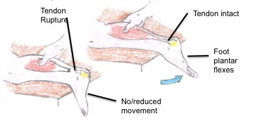
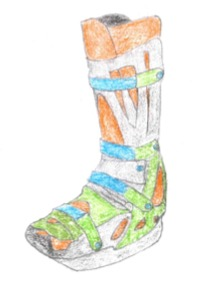

Symptoms and Signs
- You could feel a sudden onset pain in the ankle or calf area.
- You may hear a 'pop' sound at the time of the rupture.
- The heel area will become swollen and bruised.
- You will struggle to walk properly.
- You could be able to feel a defect in the tendon.
- You will struggle to point and lift your toes.
- While walking your foot will hang down and won't be able to be lifted easily.
If you believe you have the above symptoms please go to A&E to be assesed
Examination of Rupture

- Patient lies face-down (prone) on an examaination bed
- Feet extend farther than the end of the bed.
- Examiner squeezes the calf muscle.
- In a normal person it should cause the foot to plantarflex. In a patient with Achilles tendon rupture, the foot will not raise.
- Palpate to feel the ruptured Achilles tendon.
Management of Rupture
There are 2 options of surgery depending on how the tendon has ruptured
- If the tendon has ruptured in the middle the surgeon will sew the 2 ends of the ruptured tendon back together.
- If the tendon has detached from the calcaneus (the ankle bone), then the surgeon will drill a whole into the bone and attach the tendon back to the bone.
Surgical or non-surgical treatment1:
- It has been shown that surgical and non-surgical treatment of acute achilles tendon rupture have a similar effect on the performance of healed rupture
- However surgical treatment restored the strength of the calf at 18 months post sugery
- For you this means that you have a better 'health-related quality of life' than having non-surgical treatment
Rehabilitation

Post Surgery: how to get back to normal life
- Rest: It is important post operation to rest well to allow the body to recover, listen to your body, if it is hurting give it chance to rest
- A boot similar to the one pictured or a cast will be used for up to 12 weeks to maintain the foots position and take the pressure off the joint. If a boot is used, it will initally be placed plantarflexed (with the toes pointed) and will slowly be moved to a neutral foot position
- Movement in the joint will reduce swelling, but will also inpove strength of the ruptured achilles tendon, although it is important not to over-do anything.